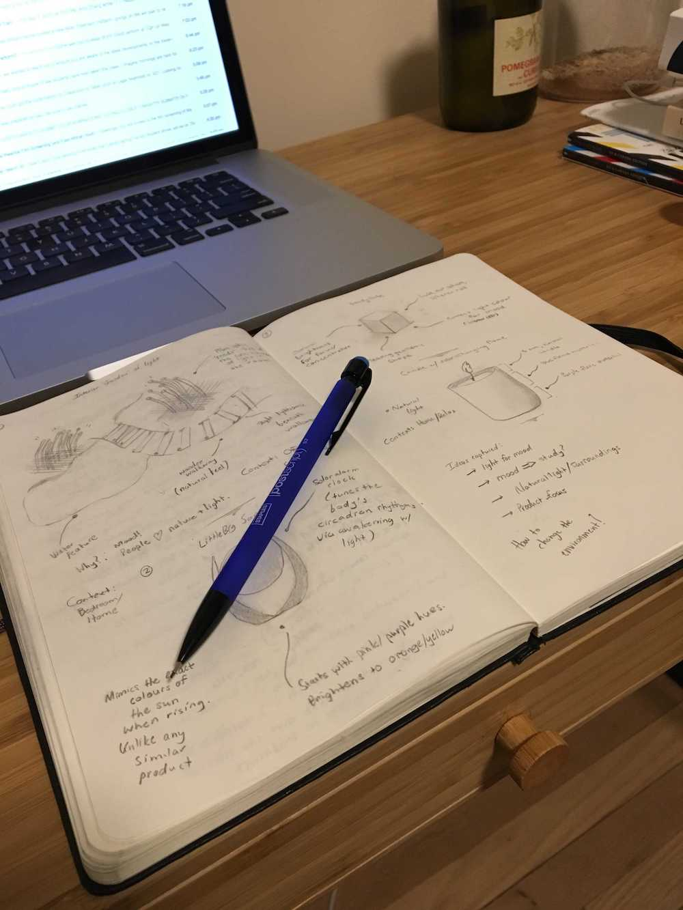
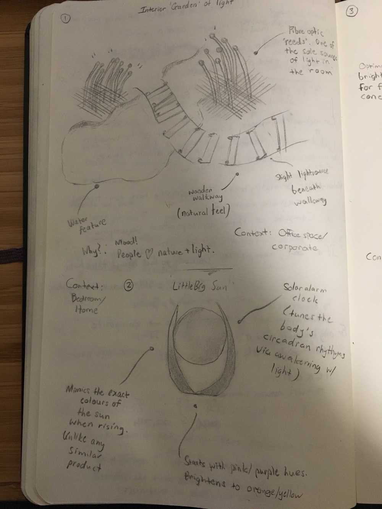
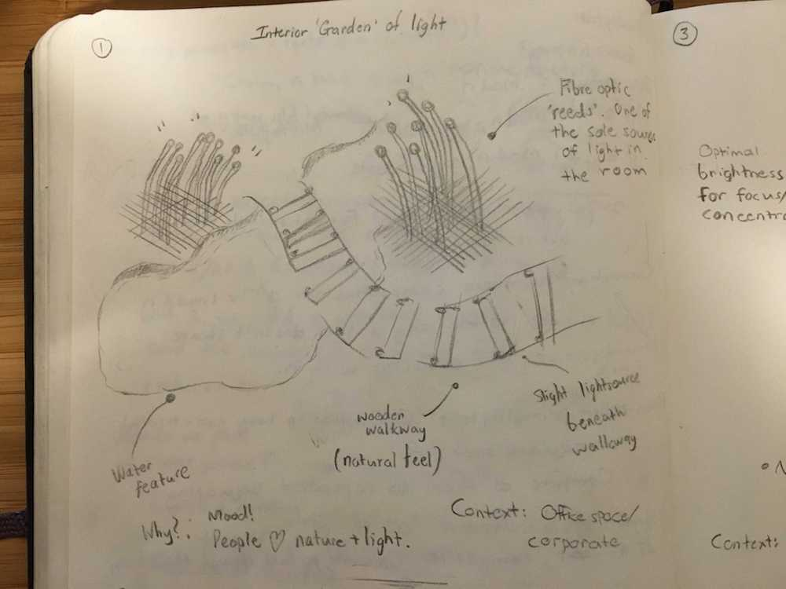
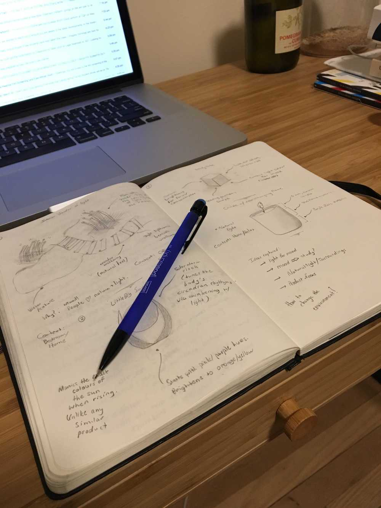
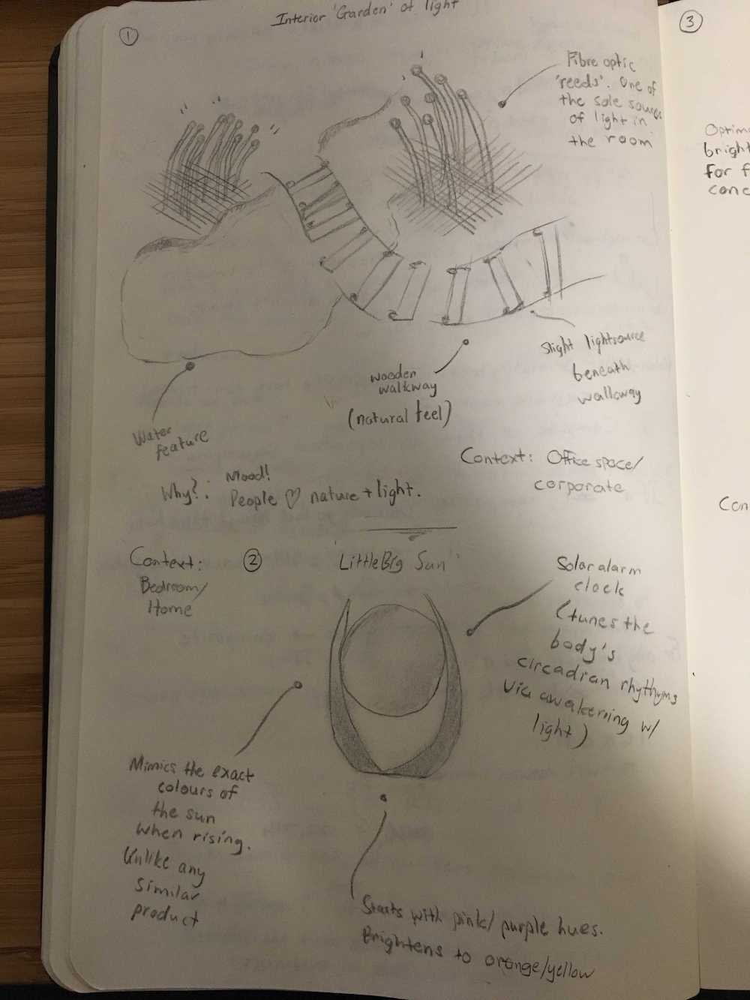
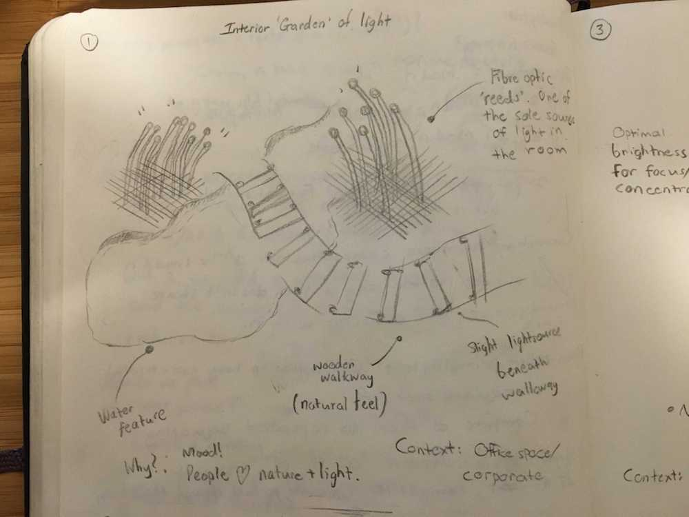
The first concept is an interior 'garden of light'. The idea is to create a 'natural' setting inside, with light used for a surreal, fantastical effect. The water feature should, preferably, make slight watery sounds (like a trickling stream), so that the consumer is always aware of the water's presence. The walkway is wooden (natural), and the reeds are actually fibre optic cables. Lots of greenery and plants are preferred. The context is a corporate, office environment (though I'd want one of these in my home) -- it could be used for entertaining associates, or as a general de-stress room.
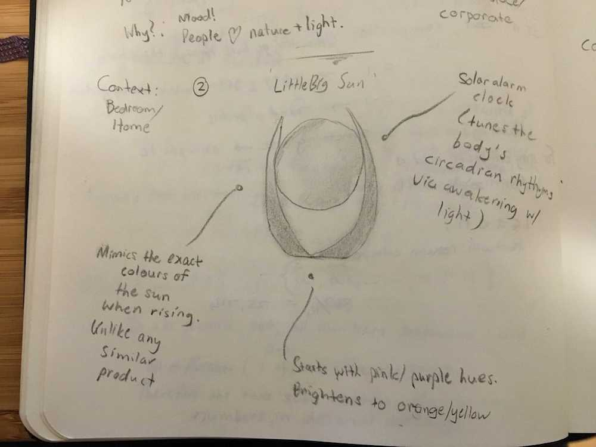The second concept is a large room light, used for waking up in the morning (or for general lighting). There are two important changes to the typical 'light' design, however. Firstly, this light will exactly imitate the colour of the sun's light on a warm, summery day. The exact colour could probably be isolated quite easily -- it should not require a particularly robust research venture. The second change relates to how the light wakes you up. It does not merely become brighter over time, it will replicate the hues of a rising sun, perhaps starting with a pinkish orange, and eventually brightening into a full yellow. The actual shape of the light is far from final. The context is home.
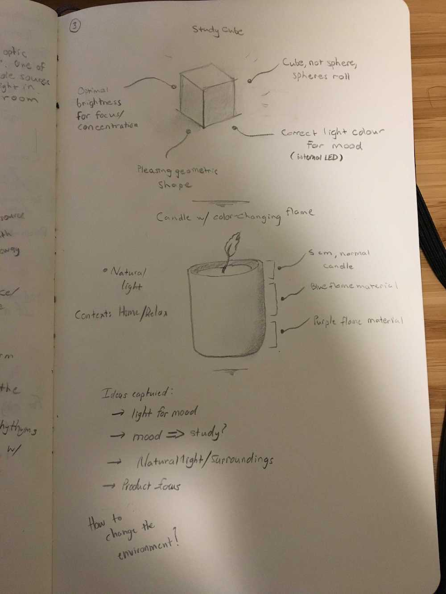 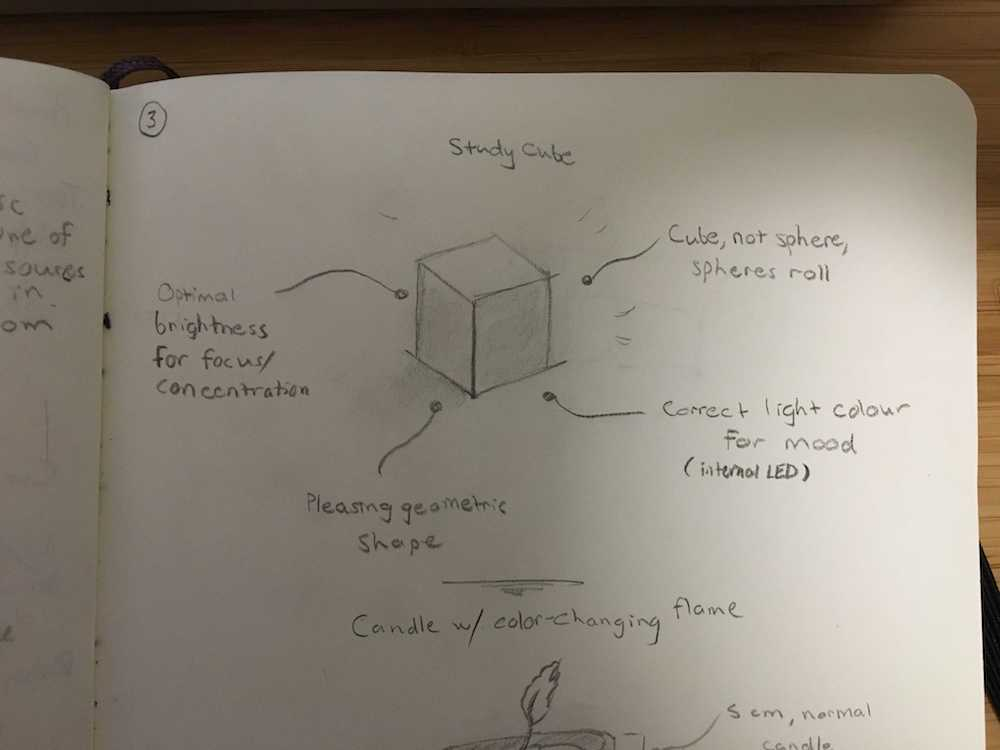The third concept is a portable light for studying. Lack of light when studying is not conducive to learning, moreover, poor mood due to bad lighting would also negatively affect the learning experience. This object will be a slightly opaque white cube. The lights inside the cube will be specially chosen to provide the correct hue and brightness for studying (research could be done). The object is a cube, as people find perfect geometric shapes to be quite satisfying (particularly cubes and spheres), and spheres have a penchant for rolling far far away.
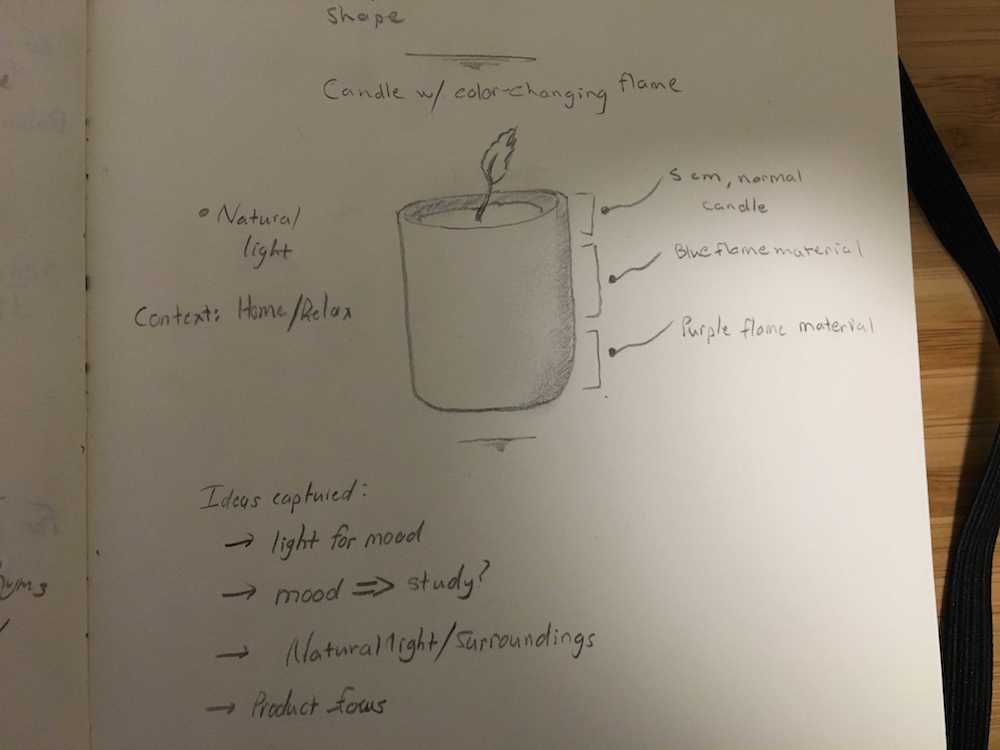The fourth concept is a candle, layered with the powder that makes fire change colours. This is predominantly a novelty idea -- the candle's flame would change colours arbitrarily whilst burning, which would amuse and entertain. Natural light from flames also tends to be quite pleasing (why I was thinking about candles in the first place). I also considered a candle with a wax shell that thins as the candle burns, allowing more light to penetrate as the flame works its way through the wax.
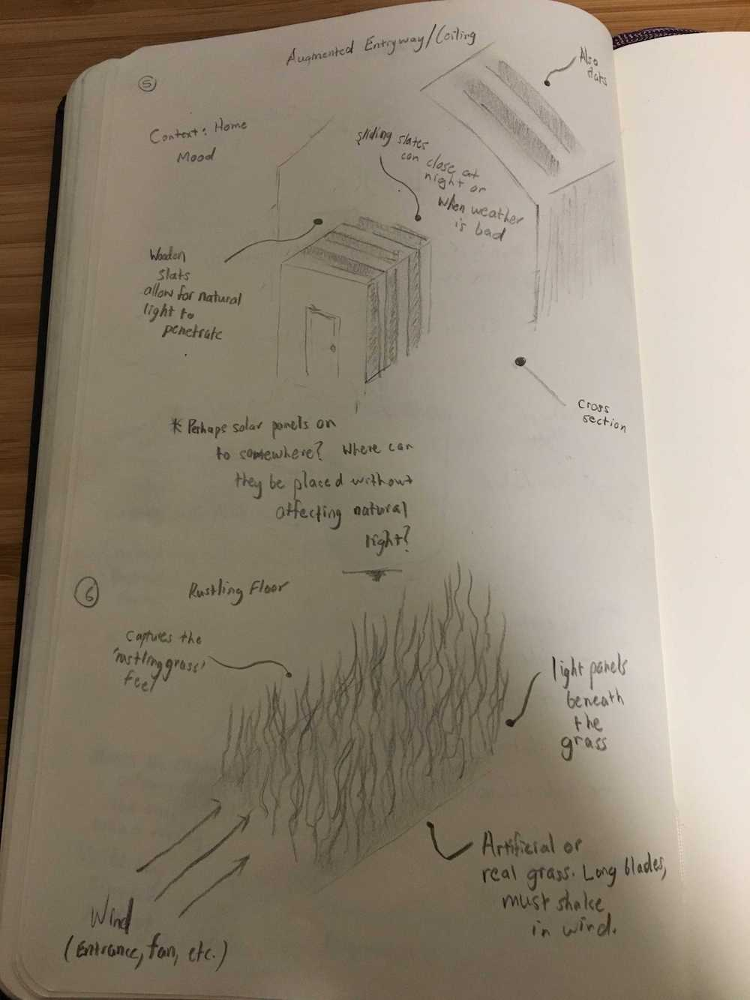 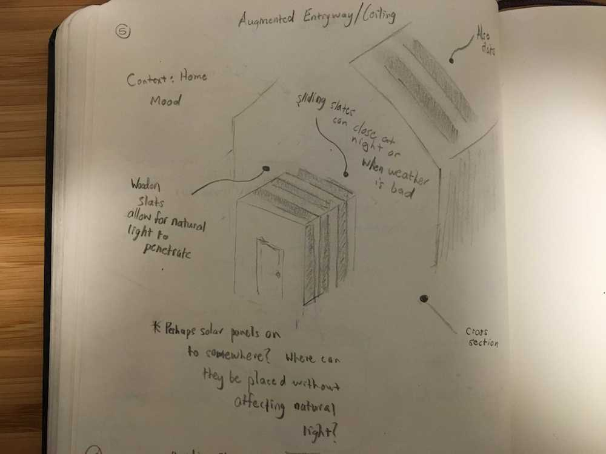The fifth concept is an exterior for a home or office space. The exterior was conceptualized with an entrayway in mind, but it can be used for any room. It is a glass exterior, layered with wooden slats (that leave large gaps). The glass allows for natural light to permeate the living space, while the wooden slats add a pleasant, natural feel, while still allowing residents to feel 'inside'. The wooden slats could then be adjusted (mechanically) at night, or during the day, whenever privacy is required.
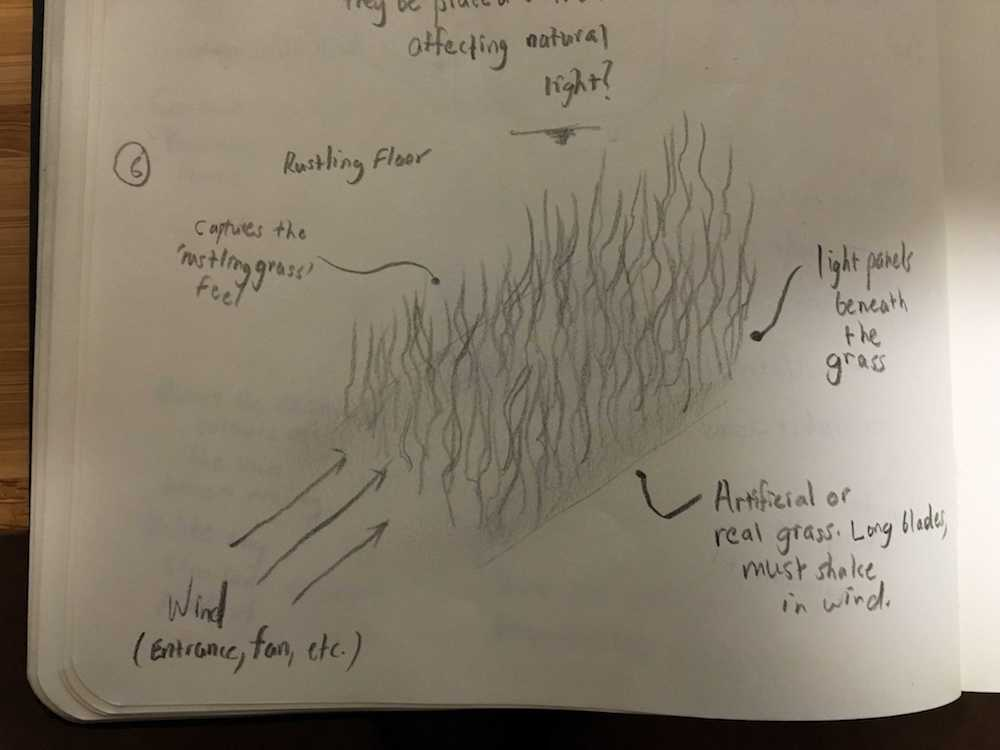The sixth concept is an LED floor panel, covered with (preferably tall) blades of grass. This should be positioned in an area with significant airflow (perhaps near an entrance, or ventilation/a fan), so that the grass rustles over the LED panel, intermittently disrupting the light. This will allow for the light in the room to emulate the rustling of the grass.